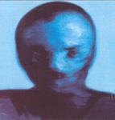

| Artist: | Domenico Solazzo |
| Title: | Carpigstroke |
| Label: | self produced LAP0301 |
| Length(s): | 50 minutes |
| Year(s) of release: | 2003 |
| Month of review: | [11/2003] |
| 1) | Prospect | 1.15 |
| 2) | Suspect | 5.09 |
| 3) | Reflect | 4.07 |
| 4) | Affect | 5.52 |
| 5) | Detect | 1.32 |
| 6) | Protect | 5.42 |
| 7) | Collect | 2.31 |
| 8) | Reject | 5.30 |
| 9) | Abject | 1.55 |
| 10) | Neglect | 4.14 |
| 11) | Infect | 4.41 |
| 12) | Eject | 2.23 |
Reflect opens with a phone call, after which we get some playing around with percussion. Then the despondent vocals start, and the music is like a depressing form of singer songwriter music. The vocal melody sounds familiar in a way.
Affect has distorted guitars, but in the back, with flat vocals up front. The vocals are somewhat similar to those of Pal Sovik of Fruitckae, or maybe a band like Sad Lovers and Giants. The production is extremely raw on this track. The drums for instance sound very flat. Very monotonous. Only later does a bit of fire come into it.
Spoken word passages dominate on Detect. Fragments from movies and the like set the tone, with a bit of tape loops in the back. The style is reminiscent of Neurosis. The percussion on this track continues into Protect, where we also find some moody keyboards in the back. Little happens, but understated melody is nice and the effects keep my attention. Later the human voice is used as an instrument. Think of Robert Wyatt here.
Halfway we encounter Collect, which is a rather disquieting piece with percussion and keyboards. Especially the latter, as they crop up here and there add to the disquieting feel.
Reject has a raw sound again, the production is very different again, much louder. Dogs barking, menacing keyboards and organ and plodding percussion are the main ingredients on this sonic film noir. Halfway we encounter a pacey marimba like part where trumpet samples round out the triphop feel. Abject is short and dominated by loud distorted guitars. Halfway the bottom drops out.
Neglect is a moody piece of work, with dark droning church organ, but as silver lining, one might say, an occasional light tinkle. Certainly has its merits.
Infect is louder again. There is a certain Welcome To The Machine feel here, but much much more bare. Later the music becomes more hectic with hammering percussion and distorted guitar. Rather demoish sounding, but very intense too.
The final track is of course Eject. This is a longish one with violin synths and spoken word samples. Dark and ambient, beautiful too. After a bit of silence we end up in ghost track, which is a bit triphop/film noir again.